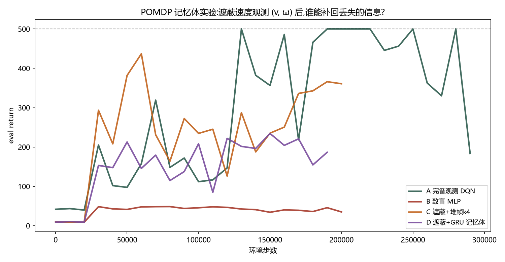
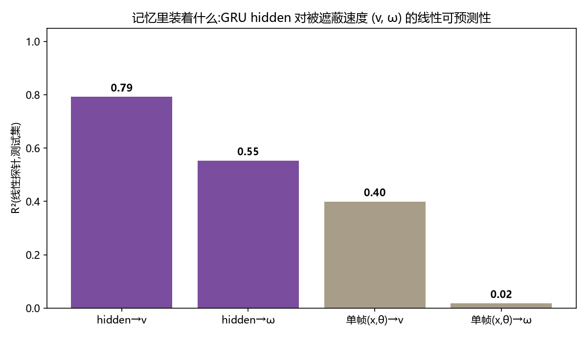

自定义智能体 · 实验设计书
POMDP 记忆体
遮住 CartPole 的速度观测,DQN 当场变瞎;再给它 GRU 记忆模块,看性能恢复。
这是"无状态智能体 → 有记忆智能体"的最小完整实验,也是通往空间记忆与 VLN 的入口。
状态:企划已发布,实验待跑。
一、原理:为什么遮住速度就"变瞎"
MDP 的假设是:当前观测包含决策所需的全部信息。CartPole 的 4 维观测 (x, θ, v, ω) 是完备的——
杆倾角 θ 相同的两个瞬间,杆可能正在左倒或右倒(ω 符号相反),最优动作也相反。
把 (v, ω) 遮掉后,同一个观测 (x, θ) 对应两种相反的命运:
- 无记忆智能体对同一个 (x,θ) 只能学出一个动作——Q 函数在冲突区域学到的是"两种隐藏状态的折中",系统性学错;
- 问题的本质是 POMDP:观测不再是状态的充分统计量。解法是引入 belief state——对历史 h_t 的压缩表示,近似恢复充分性。
记忆的三档实现,成本递增、表达力递增:
| 档位 | 机制 | 能记住什么 | 成本 |
|---|
| 堆帧 frame stack | 最近 k 帧拼接 | 速度≈差分 Δx/Δt(k=2 即可),加速度勉强 | 几乎为零(gym wrapper 现成) |
| RNN(GRU) | h_t = GRU(x_t, h_{t−1}) | 任意时长的任务相关压缩,由损失自动塑形 | agent 小改 + buffer 改造 |
| Transformer | 对整段历史做注意力 | 长程、可检索式记忆(空间记忆/VLN 主流) | 最重,本企划不做 |
为什么是你研究方向的微观模型:VLN 机器人在走廊里,当前帧看不到门后的房间——
它的空间记忆就是这个 belief state。POMDP 记忆体是把同一个问题压缩到 10 分钟训练可验证的最小环境。
二、工程实现(最小侵入,复用现有 DQN)
实验矩阵(唯一变量是"信息")
| 组 | 观测 | 智能体 | 角色 |
|---|
| A 对照(已有数据) | 完备 (x,θ,v,ω) | DQN/MLP | 上限参考(~452) |
| B 致盲 | 遮蔽 v,ω(置 0) | DQN/MLP | 证明"变瞎" |
| C 堆帧 | 遮蔽 + 最近 4 帧 | DQN/MLP | 廉价基线(差分可重建速度) |
| D 记忆体 | 遮蔽,单帧 | DQN + GRU | 主角 |
组件 1:ObsMaskWrapper(~15 行)
gym.Wrapper,把观测的 v、ω 两维置零(置零优于删除:网络输入维度不变,四组实验共享同一份网络结构,
唯一变量是信息量)。
组件 2:GRU 智能体(~50 行)
观测 encoder(MLP)→ GRUCell(h_t = GRU(x_t, h_{t−1}))→ Q 头。两个实现档:
- C1 简化档(本企划采用):在线 rollout 时维护 live hidden;buffer 每条转移多存一个 hidden 向量,
训练时直接喂"当时存下的 hidden"→ GRU 前向。工程 30 行内能跑;代价是 hidden 会随网络更新而陈旧(staleness),
与 replay buffer 的陈旧问题同源,可接受。
- C2 正路(R2D2):buffer 改存回合序列,采样长度 burnin+1 的小段;前 burnin 步只热身 hidden 不算 loss。
更正确但更复杂——页面里说明为正路,留作进阶。
组件 3:记忆内容探针(probe,研究级分析)
训练后跑若干局,收集 (h_t, 环境真值 v, ω) 对,用岭回归从 hidden 线性预测 v、ω,报告 R²。
若 R² 显著高于"从单帧 (x,θ) 直接预测"的对照,就证明了记忆里真的装着被遮住的速度——
这是表示学习社区标准的 linear probe 方法,让"它记住了什么"从猜测变成测量。
三、实验结果(已完成,真实数据)
| 组 | 末段 eval | probe R²(记忆内容) | 判读 |
|---|
| A 完备观测 DQN | ~450–500 | — | 上限参考 |
| B 致盲 MLP | 35 | 单帧(x,θ)→ω:R²=0.02 | 变瞎实锤:单帧确实不含角速度信息 |
| C 遮蔽 + 堆帧 k=4 | 361 | — | 差分重建速度,廉价但有效 |
| D 遮蔽 + GRU 记忆体 | 187 | hidden→v:R²=0.79;hidden→ω:R²=0.55 | 记忆为真,控制仍欠火候 |

四组学习曲线:A(青)到 500;C(橙)稳定爬到 ~360;D(紫)前期与 C 同速、后段停在 ~190;B(红)全程贴地 ~35。

线性探针(标准化 + 随机划分):GRU hidden 对被遮住的速度是线性可读的(v 0.79、ω 0.55),
而单帧观测对角速度一无所知(0.02)。记忆不只是一句修辞——它里面的内容可以被测量。
行为视频
B 致盲 MLP:45 步就倒
看不到速度,杆倒到一半才"察觉",每次都来不及救。
D GRU 记忆体:181 步
同样的观测,靠记忆补回速度信息,平衡时长 ×4——但还到不了堆帧的水平。
诚实的分析:记忆为真,为什么分数却输给堆帧?
- 任务的记忆需求只有 ~2 步:速度一阶差分即可重建,堆帧在这个任务里是"作弊级捷径";GRU 的优势要在更长时程的依赖里才显现(那正是 VLN/空间记忆的场景)。
- 循环 double-DQN 难优化得多:本实验 unroll 只有 8 步、每段只有 4 个损失位置,训练吞吐约为 MLP 的 1/10;同样的 200k 步,GRU 欠训练。正路是 R2D2 的完整形态:更长 unroll + burn-in + 辅助预测损失。
- probe 与控制的分离是常态:表示里"有"速度信息 ≠ 控制策略充分利用了它。这是表示学习里反复出现的教训,也正是 probe 存在的意义。
- 方法论教训(我踩的坑):probe 的 train/test 若按时间顺序划分,在非平稳轨迹上 R² 会随 episode 翻转符号(±0.5 乱跳)——必须 shuffle + 标准化 + 多 episode。
与世界观第四块的闭环:前三讲处理了估计与优化的三种误差(分布偏移/方差/偏差),
本实验处理第四种失败——信息不足:遮蔽让 DQN 从 450 跌到 35;记忆(堆帧或 GRU)把信息找回来。
你的空间记忆研究,就是这场实验在真实机器人上的放大版。